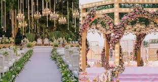

📅 21 August 2025

Wedding décor trends are evolving quickly in 2025, with couples choosing elegant, personalized setups that reflect their taste. Here are the hottest décor ideas for this year:
Soft pastel tones like blush pink, mint green, and lavender are dominating mandap and stage designs.
Instead of heavy décor, couples now prefer sleek, minimal setups with statement floral walls, chandeliers, and elegant seating arrangements.
Reusable fabrics, potted plants, and organic décor are in demand as sustainability takes center stage in weddings.
From light curtains to dazzling chandeliers, lighting is being used to create magical wedding evenings.
In 2025, the theme is clear: less clutter, more elegance.
Rajdhani Events